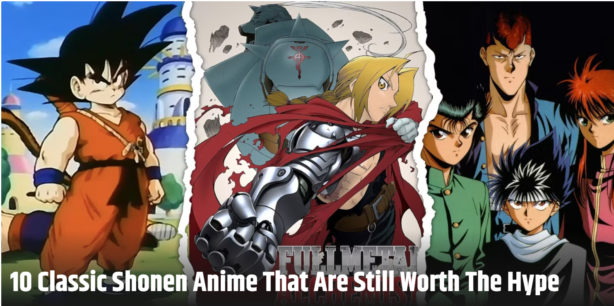

<!-- second screen -->
<div class="screen-three">

  <div class="question-three">
    <h3 style="color: black;">What makes a shonen anime enjoyable to watch for you?</h3>
    </h3>
     >
  </div>
  <div>
    <button onclick="location.href='matters_most.html'" class="option-nine">Action</button>
    <button onclick="location.href='matters_most.html'" class="option-ten">Powers</button>
    <button onclick="location.href='matters_most.html'" class="option-eleven">Transformations</button>
    <button onclick="location.href='matters_most.html'" class="option-twelve">World Building</button>
  </div>
</div>
<link rel="stylesheet" href="style.css">